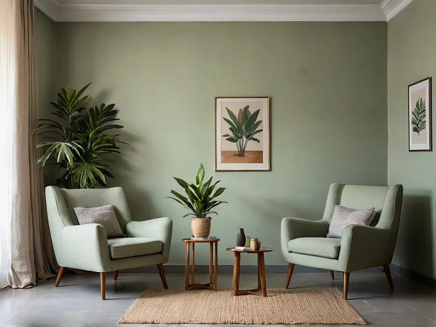
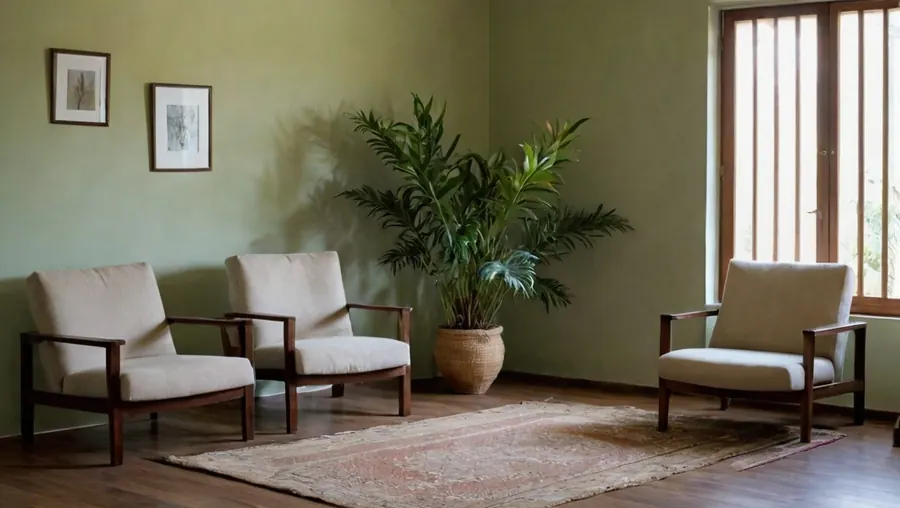
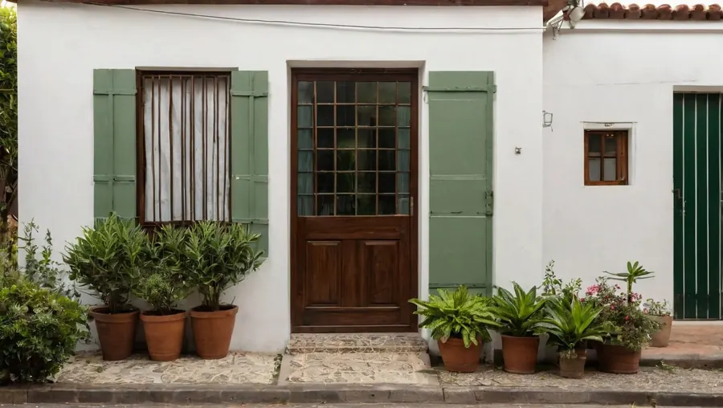

Terapia individual
Sessões semanais de 50 minutos. Ansiedade, luto, mudança de fase, autoestima, esgotamento no trabalho.
Semanal · 50 min
Santo André · presencial e on-line
Terapia individual, de casal e para adolescentes. Sem fórmula pronta e sem pressa: o trabalho começa por entender o que está acontecendo com você.

O que oferecemos
Todas as modalidades são presenciais ou por vídeo — você escolhe, e pode alternar quando precisar.
Sessões semanais de 50 minutos. Ansiedade, luto, mudança de fase, autoestima, esgotamento no trabalho.
Semanal · 50 min
Para quando a conversa entre vocês dois trava sempre no mesmo ponto. Sessões de 60 minutos.
Semanal ou quinzenal · 60 min
A partir dos 12 anos, com combinado claro de sigilo. Os responsáveis participam de encontros periódicos.
Semanal · 50 min
Para quem não está em terapia mas precisa de ajuda para lidar com o filho. Encontros pontuais.
Combinado caso a caso
Quem atende
Cada uma com abordagem própria. Na primeira conversa a gente vê quem combina mais com o que você procura — e se for o caso, indicamos alguém de fora.
CRP 06/000000 · Psicanálise
Atende adultos e casais. Trabalha há treze anos com questões de relacionamento e luto.
CRP 06/000000 · Terapia cognitivo-comportamental
Adolescentes e adultos jovens. Ansiedade, pânico e dificuldade de organização.
CRP 06/000000 · Fenomenologia
Adultos. Momentos de transição: mudança de carreira, maternidade, aposentadoria.
Onde acontece
Ficamos numa casa adaptada na Vila Assunção, com três salas de atendimento e uma sala de espera onde não se cruza com ninguém — os horários são espaçados justamente para isso.
Tem estacionamento na rua e a estação Prefeito Saladino fica a dez minutos a pé.


Antes de marcar
Não existe um limite objetivo. Em geral as pessoas procuram quando algo se repete e não passa sozinho — uma angústia, um conflito, uma dificuldade de decidir. A primeira conversa serve exatamente para isso: entender o que está acontecendo e pensar juntos se a terapia ajuda no seu caso.
Depende do que você procura, e ninguém consegue dizer isso na primeira sessão com honestidade. O que dá para combinar é reavaliar de tempos em tempos, junto, se o trabalho está fazendo sentido.
Fica. O sigilo é obrigação legal do psicólogo, não uma cortesia. As exceções são poucas e previstas em lei — risco de vida e situações de violência contra criança ou adolescente — e são explicadas a você logo no começo.
O atendimento é particular. Emitimos recibo com CRP e CPF para você pedir reembolso ao seu plano ou lançar no imposto de renda. Consulte antes o percentual que o seu convênio devolve.
Avisando com 24 horas de antecedência, a sessão é remarcada dentro da mesma semana sempre que houver horário. Sem aviso, a sessão é considerada realizada — o horário fica reservado só para você.
Fale com a gente
Escreva no WhatsApp dizendo o que está procurando. Quem responde é uma das psicólogas, não uma secretária eletrônica.